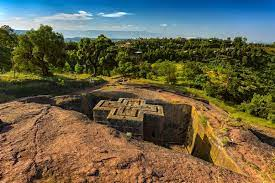
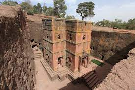

The Rock-Hewn Churches of Lalibela
Lalibela is located approximately 370 miles (600 kilometers) north of Addis Ababa in the Amhara Region, situated at an altitude of 8,200 feet (2,500 meters). In its center lies a unique complex of 11 churches cut out of the living rock some 800 years ago. Their construction is attributed to King Lalibela (approximately 1181-1221), of the Zagwe dynasty, who attempted to create a new Jerusalem on African soil, accessible to all Ethiopians. Even the names of Lalibela’s features echo those of Jerusalem: the river Jordan, the church of Golgotha, and the Tomb of Adam. The churches are still used for daily worship and special ceremonies, receiving pilgrims and large crowds during holidays such as Christmas and Easter. The churches, inscribed on the World Heritage List in 1978, are sculpted out of solid volcanic rock and are often connected by long underground tunnels and trenches. The main cluster of 11 churches is divided in two groups: a northern group with five churches and an eastern group with another five, while Biet Gyorgis, perhaps the most famous, is an isolated church.
The churches are arranged in two main groups, connected by subterranean passageways. One group, surrounded by a trench 36 feet (11 metres) deep, includes House of Emmanuel, House of Mercurios, Abba Libanos, and House of Gabriel, all carved from a single rock hill. House of Medhane Alem (“Saviour of the World”) is the largest church, 109 feet (33 metres) long, 77 feet (23 metres) wide, and 35 feet (10 metres) deep. House of Giyorgis, cruciform in shape, is carved from a sloping rock terrace. House of Golgotha contains Lalībela’s tomb, and House of Mariam is noted for its frescoes. The interiors were hollowed out into naves and given vaulted ceilings.
The expert craftsmanship of the Lalībela churches has been linked with the earlier church of Debre Damo near Aksum and tends to support the assumption of a well-developed Ethiopian tradition of architecture. Emperor Lalībela had most of the churches constructed in his capital, Roha, in the hope of replacing ancient Aksum as a city of Ethiopian preeminence. Restoration work in the 20th century indicated that some of the churches may have been used originally as fortifications and royal residences.
The churches attract thousands of pilgrims during the major holy day celebrations and are tended by priests of the Ethiopian Orthodox Tewahedo Church. The town also serves as a market centre for the Amhara people. Pop. (2007) 17,367.
In 2012, we were awarded a grant by the U.S. State Department's Ambassadors Fund for Cultural Preservation (AFCP) to implement the pilot preservation project at Beta Gabriel Rafael, and this was successfully completed in December 2015. Working with the Ethiopian Authority for Research and Conservation of Cultural Heritage (ARCCH), we undertook a comprehensive preservation program at the church. Crumbling stone on the exterior walls of the church has been preserved, and a new waterproof layer has been laid on the roof improving drainage, and preventing water from entering inside or cascading down its facades. Structural repairs have also been completed inside the building. Traditional, lime-based mortars were used for all preservation work, and the methodologies developed, which can be replicated across the site, have been recorded in technical guidelines.